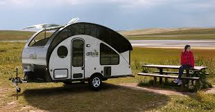
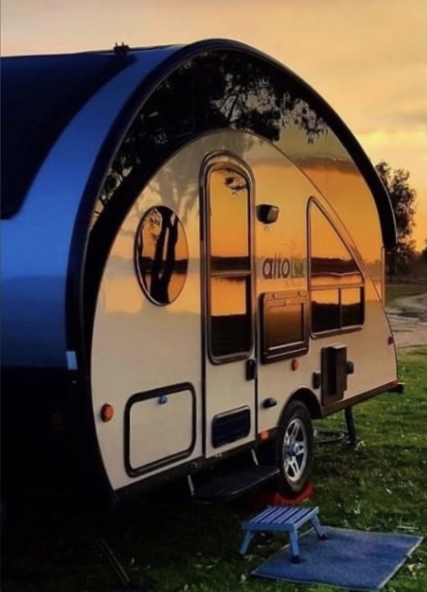
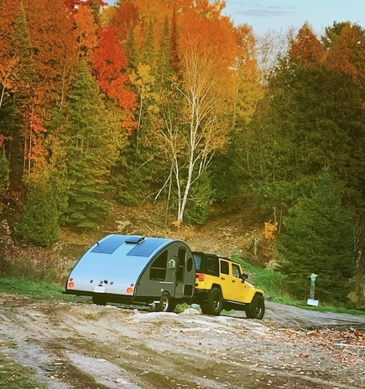

Let me introduce you to the Alto R1713 teardrop camper. As you can see from the photos, the Alto has a very futuristic look and aerodynamic fuel efficiency in route. The big attraction and appeal of the Alto series camper is the expansive views from the windows when extended at camp. It feels as if you are in a treehouse when camping in the woods or in the clouds when parked in the open breeze. And just check out those reflections. Towing weight is super light at 1825lbs and she can be easily stored in a garage. If you need something more to be impressed, the Alto also comes with the option of a caravan mover to make hooking up and moving around a campsite a breeze.
 You wanna boondock? The Alto also comes with the option of solar panels and propane tanks to keep you off grid when you wanna really get away. Check out the Safari Condo site to see capacity for fresh, black and gray water tanks.
